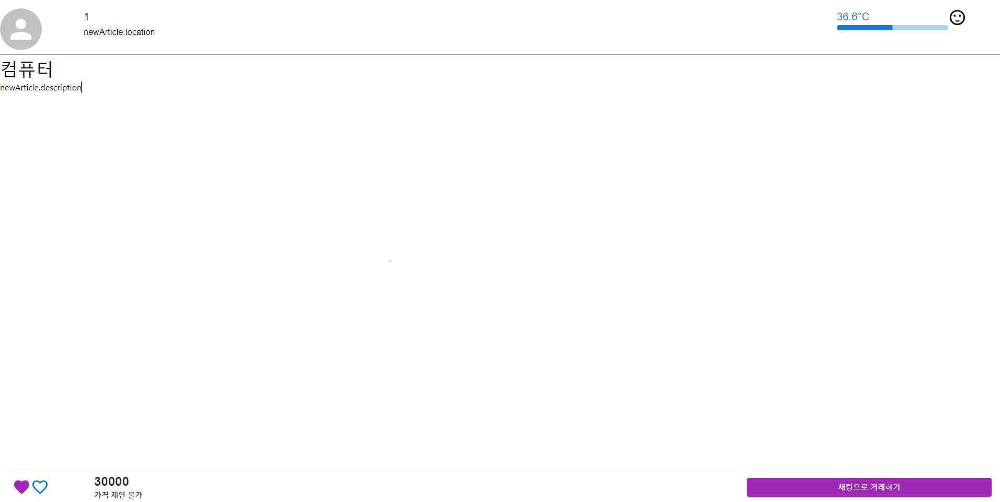
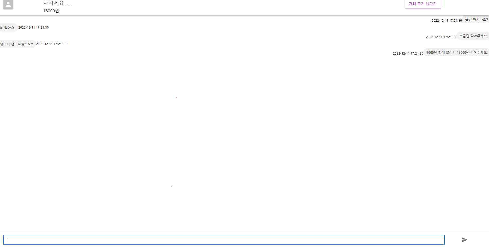

개인 학습 프로젝트
Carrot 클론
상품을 올리고 둘러보는 거래 서비스를 본떠 화면과 서버를 연결해 본 2022년 학습 프로젝트입니다.

개요
화면은 React와 Axios, Material UI로, 서버는 Express와 MySQL, Sequelize 기반 MVC 구조로 만들었습니다. 두 부분을 연결해 상품 조회, 상세 보기, 등록 기능을 구현했습니다. 채팅 화면은 더미 데이터로 화면 구성만 만들었습니다.
기능
- 상품 조회와 등록
- 서버 API에서 상품 목록과 상세 정보를 받아 보여 주고, 사용자가 입력한 상품을 등록합니다. 거래 화면
- API 연동 문제 해결
- CORS와 JSON 파싱 문제를 API 요청 도구로 확인해 고쳤고, useEffect 의존성을 조정해 요청이 반복되던 문제를 해결했습니다.
화면
